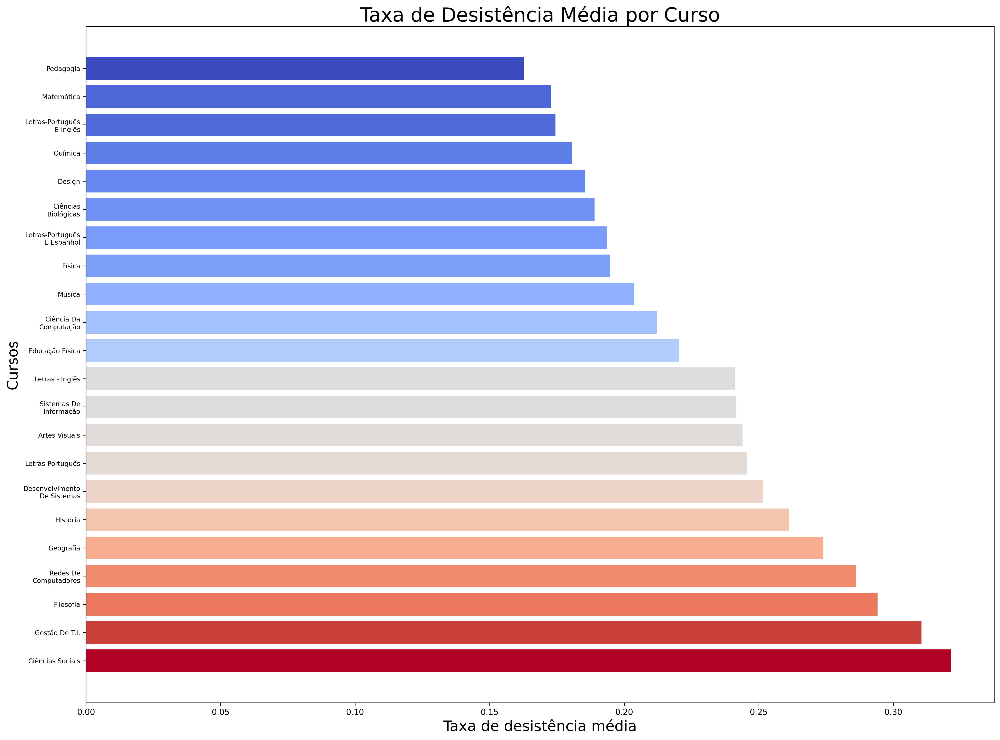

Analysis of The Mean Non Attendance Rates for Each Course - Larissa¶
I chose to analyse the mean non attendance rates by courses offered by institutions of undergraduate learning throughout Brazil.
The course with the highest non attendance rate is Computer Networks (pt. Redes de Computadores), with almost 37% of mean non attendance, followed by Management of Information Technologies (pt. Gestão de Tecnologia de Informação) and Social Sciences (pt. Ciências Sociais), with 36% and 33% of mean non attendance, respectively.
The major with the highest attendance, however, has meager 17% of mean non attendance, followed by Chemistry and Mathematics, both with a rate of 19%.
By that analysis one can’t see any major correlations between course areas and non attendance rates. Some points worth mentioning are that majors realted to Information Technologies have non attendance rates greater than average, and that courses in Natural Sciences such as Physics, Mathematics and Chemistry seem to have fairly low non attendance rates.
>>> import createobjects as co
>>> import data_cleaner as dc
>>> data_path = "./data/dataframes/resultados_cpc_2021.xlsx"
>>> raw_df = co.load_data_as_df(data_path)
>>> co.create_non_attendance_df(raw_df)
Área de Avaliação Taxa de Desistência Média
21 Redes De Computadores 0.369736
20 Gestão De T.I. 0.356260
3 Ciências Sociais 0.327488
6 Filosofia 0.301489
8 Geografia 0.283481
19 Desenvolvimento De Sistemas 0.282415
9 História 0.273943
0 Artes Visuais 0.271699
11 Letras-Português 0.268613
18 Sistemas De Informação 0.265365
10 Letras - Inglês 0.260041
5 Educação Física 0.234124
1 Ciência Da Computação 0.217040
15 Música 0.205587
4 Design 0.205321
12 Letras-Português E Espanhol 0.203880
7 Física 0.202702
13 Letras-Português E Inglês 0.199590
2 Ciências Biológicas 0.197224
14 Matemática 0.194282
17 Química 0.189453
16 Pedagogia 0.172567
Plotting that information as a bar graph, we have:
